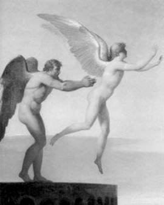
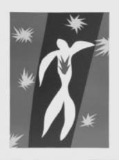

Ne var ki Minos'un Boğası anlamına gelen insan bedenli, boğa başlı bu canavar Minotauros'u öyle halatlarla zincirlerle bağlayıp tutmak olası değildi!. Bu yüzden kral Minos; her sıkıştığında başvurduğu gibi, sanatçı Daydalos'a danışmak zorunda kaldı... Daydalos bir süre düşünüp taşındıktan sonra, aslında kendi yaratımı olan ve kimsenin bilmediği bu canavar sorununa çözüm olarak, Labirintos adını verdiği çok büyük ve içi dehlizlerle dolu bir bina yapmayı önerdi krala. Minotauros bu dehlizlerden birine kapatılacak ve oradan artık yaşam boyu çıkamayacaktı! Mimarın bu önerisini kral çok beğendi ve hemen Labirintos'u yapmasını buyurdu...

Daydalos, oğlu İkaros'a kanat takıp uçururken
Daydalos da binbir odalı ve karmakarışık geçitlerle örülü ve bir benzeri olmayan bu yapıyı kısa sürede bitirdi. Gerçekten de bu geniş ve karmaşık yapının odalarından birine dalan bir insan bile bir daha geri dönüp dışarı çıkamıyordu!.. İçi dehlizlerle dolu böylesi yapılar, eski Mısır'da kral mezarlarını korumak için yeraltlarında yapılırdı. Onun için Mısırlılar, Daydalos'un Girit adasındaki bu Labirintos'unu, Mısır'daki benzeri yapılardan esinlendiğini ileri sürdüler yüzyıllar boyunca.
Artık Minotauros denen kralın canavarı; Daydalos'un dahiyane yapıtı Labirintos'un o karanlık dehlizlerine kapatıldı. Ne var ki sorun burada bitmiyordu. Çünkü bu canavara her yıl yedi delikanlıyla yedi güzel genç kızı kurban etmek gerekiyordu! Bu bir tanrı buyruğuydu... Kral Minos da bu kurbanlık gençleri, o zamanlar egemenliği altındaki Atina krallığından isteyip getirtiyordu. Haliyle böylesi bir cezadan bıkıp usanan Atina kralı da halkın en büyük ulusal kahraman olarak benimsediği oğlu Teseus'u, Labirintos'a kapatılmış canavarı öldürmekle görevlendirdi...
Teseus, böyle bir görevi üstlenir üstlenmez hemen Girit adasına gitti gizlice. Adada bir yolunu bulup kral Minos'un güzel kızı Aryadne (Ariadne) ile tanıştı. Ve prenses Aryadne de kısa sürede ısındı bu gence; artık birbirlerinin sırlarını da bölüşmeye başladılar... Haliyle Teseus, prensesin kendine duyduğu sevgiye güvenerek kimliğini ve de adaya geliş nedenini açıkladı... Teseus, Atina halkını her yıl ondört kurbanlık genç göndermek zorunda bırakan Minotauros'u öldürmek istediğini söyledi... Bunun üzerine sımsıcak gönüllü Aryadne; sözde ülkesinin düşmanı olan ve sevgilisi bellediği Teseus'a hak verdiğini söyledi...
Bu konuşmadan sonra Aryadne, dehlizde tutuklu ama insan öğüten canavarı öldürmesi için ona yardımcı olacağına söz verdi... Ama sevgilisi Teseus, canavarı öldürdükten sonra Labirintos'un o karanlık ve karmakarışık dehlizlerinden nasıl gerisingeri gelip dışarı çıkabilecekti? Bu konuda binanın mimarı Daydalos'a başvurdu güzel Aryadne. Mimar; Teseus'un dehlizlere girerken eline aldığı bir yumak ipliği çöze çöze ilerlemesini; canavarı öldürdükten sonra da gene bu ip yardımıyla dışarı çıkmasını önerdi. Gerçekten de mimarın verdiği öğüdün yardımıyla canavarı birlikte öldürüp rahatça dışarı çıkabildiler... Başarılarından öylesine mutluydular ki, daha sonraki günlerde de aynı yöntemle, dehlizlere birlikte girip çıkmaya ve böylece kimselere görünmeden Labirintos'un karanlık dehlizlerinde, aşklarının tadını çıkarmaya başladılar.
Ama kral Minos'a sürekli kin tutan tanrı Poseydon; onu öfkeden kudurtmak için bir gece düşüne girdi ve dostu saydığı Daydalos'un sarayda çevirdiği dolapları anlattı... Karısının o ak boğayla çiftleşmesine Daydolos'un nasıl yardımcı olduğunu ve kızının da Atinalı hasım prense iplik yardımıyla Minotauros'u nasıl öldürttüğünü bir bir açıkladı. Haliyle kral Minos karısının bir boğayla çiftleşip canavar doğurmuş olmasına ve kızının gizlice bir düşman prensle sevişmekte olduğuna önce inanmak istemedi... Çok geçmeden öfkesi kabardı da kabardı... Can dostu saydığı sanatçı Daydalos'u artık can düşmanı olarak görmeye başladı. Tam tanrı Poseydon'un istediği gibi öfkeden çılgına dönen kral Minos; bu kez Daydalos'u ve sarayındaki kendi kölesi bir kadından olma oğlu İkaros'u, Labirintos'un çıkışı olmayan dehlizlerine kapattırdı! Daydalos; özellikle hiçbir suçu olmayan oğlu İkaros'u bağışlaması için krala uzun uzun yalvardı. Ama hiçbir sonuç alamadı! Ne var ki bir süre sonra kralın karısı Pasifae, bir yolunu bulup çok sevdiği sanatçı Daydalos ve oğlu İkaros'un Labirintos'tan kaçıp kurtulmalarına yardımcı oldu. Ama olayı haber alan kral, Girit'teki bütün deniz ve kara yollarını anında kapattırdı...
Öyle de olsa Daydalos'un o sınırsız yaratıcılığı hiç biter miydi! Sanatçımız hemen düşündü taşındı... Anladı ki Girit adasından tek kaçış yolu vardı; o da o uçsuz bucaksız, kimselerin ne üstünde yürüyebildiği, ne de içinde uçabildiği masmavi gökyüzüydü!.. Hemen bir yerlerden bulup buluşturduğu balmumuyla, kuş kanatlarından derlediği sağlam tüyleri birbirine yapıştıraraktan hem oğlu hem kendisi için iki çift kanat yaptı. Bu kanatları hem oğlunun hem de kendinin omuzlarına gene balmumuyla yapıştırdı. Böylece kanatlanan baba-oğul; artık kırlangıçlar, kartallar gibi özgürce uçabileceklerdi gökyüzünde!

Yüreğindeki hiç sönmeyen ateşle düşen yaramaz İkaros (Matisse)
Daydalos; havalandıklarında oğlunun alçaktan da yüksekten de uçmasını engellemek için, tanrıların kıskançlığından söz etti ona uzun uzun. Tanrılar, insanların kendilerine yaklaşmalarını, hele hele kendileriyle yarışmaya kalkmalarını hiç istemezlerdi. Üstelik o güne dek insan bedeninin hiç dolaşmadığı gökyüzünde çok yüksekten uçarsa, atların çektiği arabasında güneşi koşturan tanrı Helyos hemen öfkelenirdi. O yüzden de kanadındaki balmumunu kızgın ışıklarıyla o saat eritir, üstünde uçtuğu denize fırlatıp atıverirdi onu!.. Çok alçaktan uçarsa da bir martı sürüsüne çarpabilirdi örneğin. O zaman da martı çığlıklarından ürker, denize düşebilirdi!.. Böyle böyle, gökyüzünde sürdürecekleri mavi yolculuğun başarılı geçmesi konusunda uzun uzun öğütler verdi delişmen oğlu İkaros'a...
Baba oğul birlikte havalanmalarından az sonra yaramaz İkaros, gökyüzünde ilk uçan çocuk olmanın sarhoşluğundan ve havalardaki maviyle, ışıklarla, bulutlarla oynaşmanın tadına doyamadığından, güneşe doğru yükseldi de yükseldi... O anda güneşi gökyüzünde atlarıyla koşturmakta olan tanrı Helyos, insanoğlunun şımarıp havalarda bunca yükselmesine, kendisine doğru yaklaşmasına haliyle çok öfkelendi... Üstelik kendisine doğru uçaraktan gelmekte olan yaramaz çocuk, atları ürkütüp güneşi yeryüzüne düşürebilirdi! O yüzden hemen kızgın ışınlarıyla İkaros'un kanatlarını omuzlarına yapıştıran balmumunu eritiverdi!.. Omuzlarındaki kanatların kopmasıyla tersyüz olan İkaros, savrula savrula düşmeye başladı ve çok geçmeden Ege'deki Sisam adası yakınlarında denize çakılıp sulara gömüldü... Onun düştüğü yere de artık "İkaros Denizi" demeye başladı dünya halkları.
Ne var ki yaramaz İkaros'un uçsuz bucaksız göklerde güneşi elleriyle tutacakmışçasına habire yükselme tutkusu, kendisinden sonraki bütün çocukları coşturacak ve nice sanatçılara, bilim adamlarına, evrenin fethi yolunda esin kaynağı olacaktı...
Örneğin ressam Matisse; yaramaz İkaros'un göğsüne kıpkırmızı ve hiç sönmeyen bir kor olarak nakışlayacaktı bu tutkuyu.
Ve Akdenizli bir ozan da; "Güneşi zaptedeceğiz,/Güneşin zaptı yakın!" diyecekti.